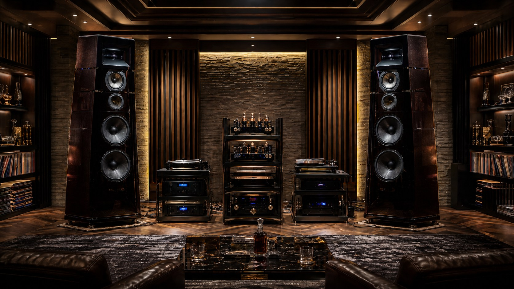

十二流派診断

示威流

家元：威響斎（いきょうさい）
"示威流とは、オーディオを自己の審美眼・財力・到達点を他者へ示すための象徴として扱う顕示の道です。"
示威流の言葉
示威流は、自己の到達点を形として示すことを厭わない。入念に選び抜かれた機材、磨き上げられたシステムの完成度——それらは、所有者の審美眼と努力の結晶である。「見た人に伝わる」こと、「分かる人には分かる」ことに、この流派は誇りを置く。

高価な機材を揃えることが目的ではない。むしろ、適切な機材を適切な場所に配し、システム全体として語れる完成度を持つことが示威流の美学である。人に聴かせたとき、驚きと称賛が生まれる瞬間に、この道の達成感がある。
向く環境は、来客を迎えられるリスニングルーム、あるいはオーディオ仲間が集まるホームシアターなど。自らの世界観を形として結晶させた者の流派である。